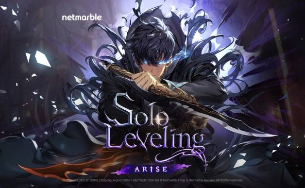
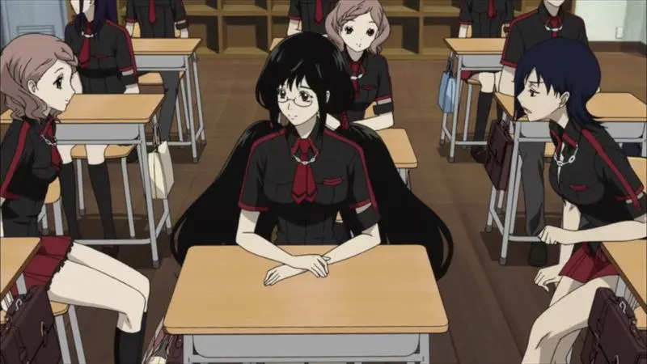
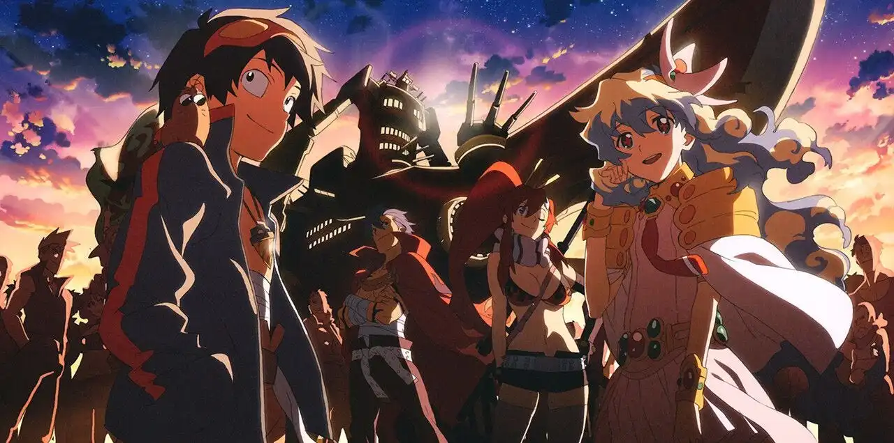
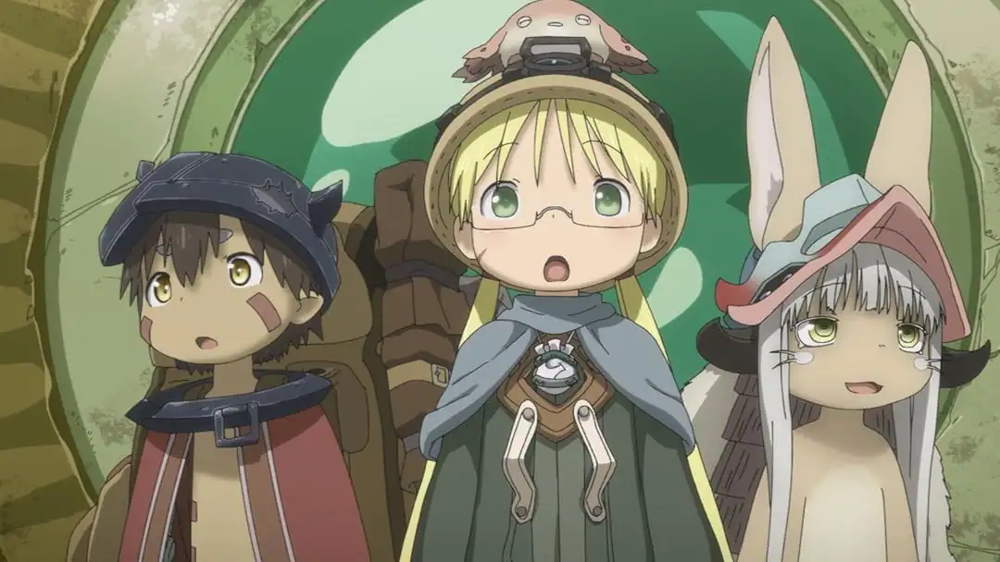

<section class="widget">
    <h3>Postagens Recentes</h3>
    <div class="recent-posts">

        <article class="recent-card">
            <a href="../paginas/solo-leveling-arise-rpg-de-acao-chega-em-breve.html"
                class="recent-thumb"></a>
            <div>
                <a href="../paginas/solo-leveling-arise-rpg-de-acao-chega-em-breve.html"
                    class="recent-title">Prepare-se para Upar: Solo Leveling Arise Ganha Data e Detalhes!</a>
                <div class="recent-meta">5 set 2025</div>
            </div>
        </article>
        <article class="recent-card">
            <a href="../paginas/blood-c-o-terror-escondido-sob-uma-rotina-pacifica.html" class="recent-thumb"></a>
            <div>
                <a href="../paginas/blood-c-o-terror-escondido-sob-uma-rotina-pacifica.html"
                    class="recent-title">Blood-C: O Terror Escondido Sob uma Rotina Pacífica.</a>
                <div class="recent-meta">4 set 2025</div>
            </div>
        </article>
        <article class="recent-card">
            <a href="../paginas/re-zero-o-isekai-que-transformou-sofrimento-em-arte.html" class="recent-thumb"></a>
            <div>
                <a href="../paginas/re-zero-o-isekai-que-transformou-sofrimento-em-arte.html"
                    class="recent-title">Re:Zero: O Isekai que Transformou Sofrimento em Arte.</a>
                <div class="recent-meta">4 set 2025</div>
            </div>
        </article>
        <article class="recent-card">
            <a href="../paginas/senpai-is-an-otokonoko-filme-chega-aos-cinemas-pela-crunchyroll.html"
                class="recent-thumb"></a>
            <div>
                <a href="../paginas/senpai-is-an-otokonoko-filme-chega-aos-cinemas-pela-crunchyroll.html"
                    class="recent-title">Senpai é uma Otokonoko: Filme "Sunshine After the Rain" Chega aos Cinemas!</a>
                <div class="recent-meta">3 set 2025</div>
            </div>
        </article>
        <article class="recent-card">
            <a href="../paginas/tengen-toppa-gurren-lagann-o-anime-que-perfurou-os-ceus-com-sua-epopeia.html"
                class="recent-thumb"></a>
            <div>
                <a href="../paginas/tengen-toppa-gurren-lagann-o-anime-que-perfurou-os-ceus-com-sua-epopeia.html"
                    class="recent-title">Tengen Toppa Gurren-Lagann: O Anime Que Perfurou os Céus com Sua Epopeia.</a>
                <div class="recent-meta">1 set 2025</div>
            </div>
        </article>
        <article class="recent-card">
            <a href="../paginas/made-in-abyss-a-deslumbrante-e-brutal-jornada-ao-desconhecido.html"
                class="recent-thumb"></a>
            <div>
                <a href="../paginas/made-in-abyss-a-deslumbrante-e-brutal-jornada-ao-desconhecido.html"
                    class="recent-title">Made in Abyss: A Deslumbrante e Brutal Jornada ao Desconhecido.</a>
                <div class="recent-meta">31 ago 2025</div>
            </div>
        </article>
        <article class="recent-card">
            <a href="../paginas/mergulhe-no-mundo-dos-animes-o-guia-completo-para-iniciantes.html"
                class="recent-thumb"></a>
            <div>
                <a href="../paginas/mergulhe-no-mundo-dos-animes-o-guia-completo-para-iniciantes.html"
                    class="recent-title">Mergulhe no Mundo dos Animes: O Guia Completo para Iniciantes.</a>
                <div class="recent-meta">29 ago 2025</div>
            </div>
        </article>
        <article class="recent-card">
            <a href="../paginas/haikyuu-fly-high-monte-seu-time-dos-sonhos-no-novo-jogo-mobile.html"
                class="recent-thumb"></a>
            <div>
                <a href="../paginas/haikyuu-fly-high-monte-seu-time-dos-sonhos-no-novo-jogo-mobile.html"
                    class="recent-title">Haikyuu!! FLY HIGH: Monte Seu Time dos Sonhos no Novo Jogo Mobile!</a>
                <div class="recent-meta">28 ago 2025</div>
            </div>
        </article>
        <article class="recent-card">
            <a href="../paginas/kimetsu-no-yaiba-a-saga-do-castelo-infinito-o-que-esperar-dos-filmes.html"
                class="recent-thumb"></a>
            <div>
                <a href="../paginas/kimetsu-no-yaiba-a-saga-do-castelo-infinito-o-que-esperar-dos-filmes.html"
                    class="recent-title">Kimetsu no Yaiba: A Saga do Castelo Infinito — O Que Esperar dos Filmes!</a>
                <div class="recent-meta">27 ago 2025</div>
            </div>
        </article>

    </div>
</section>

<section class="widget">
    <h3>Categorias</h3>
    <div class="cats">
        <a href="../paginas/cats/cat-anime.html">Anime (19)</a>
        <a href="../paginas/cats/cat-manga.html">Mangá (1)</a>
        <a href="../paginas/cats/cat-filme.html">Filme (3)</a>
        <a href="../paginas/cats/cat-reviews.html">Reviews (2)</a>
        <a href="../paginas/cats/cat-games.html">Games (2)</a>
        <a href="../paginas/cats/cat-curiosidades.html">Curiosidades (3)</a>
        <a href="../paginas/cats/cat-listas.html">Listas (2)</a>
        <a href="../paginas/cats/cat-guias.html">Guias (1)</a>
    </div>
</section>

<section class="widget">
    <h3>Tags</h3>
    <div class="box">
        <div class="tags">
            <a class="tag" href="../paginas/tags/tag-acao.html">ação (11)</a>
            <a class="tag" href="../paginas/tags/tag-aventura.html">aventura (7)</a>
            <a class="tag" href="../paginas/tags/tag-romance.html">romance (4)</a>
            <a class="tag" href="../paginas/tags/tag-isekai.html">isekai (2)</a>
            <a class="tag" href="../paginas/tags/tag-comedia.html">comédia (5)</a>
            <a class="tag" href="../paginas/tags/tag-drama.html">drama (10)</a>
            <a class="tag" href="../paginas/tags/tag-super-heroi.html">super-héroi (1)</a>
            <a class="tag" href="../paginas/tags/tag-fantasia.html">fantasia (6)</a>
            <a class="tag" href="../paginas/tags/tag-slice-of-life.html">slice of life (2)</a>
            <a class="tag" href="../paginas/tags/tag-sobrenatural.html">sobrenatural (3)</a>
            <a class="tag" href="../paginas/tags/tag-shounen.html">shounen (5)</a>
            <a class="tag" href="../paginas/tags/tag-seinen.html">seinen (2)</a>
            <a class="tag" href="../paginas/tags/tag-terror.html">terror (2)</a>
            <a class="tag" href="../paginas/tags/tag-mecha.html">mecha (3)</a>
            <a class="tag" href="../paginas/tags/tag-esporte.html">esporte (3)</a>
            <a class="tag" href="../paginas/tags/tag-psicologico.html">psicológico (5)</a>
            <a class="tag" href="../paginas/tags/tag-sci-fi.html">sci-fi (5)</a>
            <a class="tag" href="../paginas/tags/tag-suspense.html">suspense (1)</a>
            <a class="tag" href="../paginas/tags/tag-misterio.html">mistério (1)</a>
            <a class="tag" href="../paginas/tags/tag-musica.html">música (1)</a>
            <a class="tag" href="../paginas/tags/tag-rpg.html">rpg (1)</a>
            <a class="tag" href="../paginas/tags/tag-gacha.html">gacha (1)</a>
        </div>
    </div>
</section>